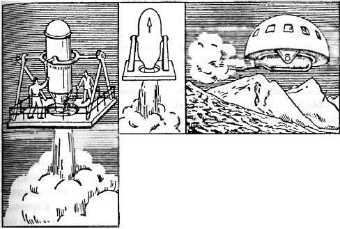

«Воздухоплавательный прибор» Кибальчича
Мы помним, что с середины XIX века различными авторами выдвигались самые необыкновенные проекты использования силы реактивной отдачи в транспортных системах. Но в их ряду революционер Николай Кибальчич стоит особняком. Во-первых, он — человек ярчайшей судьбы. Во-вторых, он сформулировал новый и не встречавшийся в других проектах ракетодинамический принцип создания подъемной силы, исключавшей воздух как опорную среду.
До Кибальчича авторы проектов реактивных летательных аппаратов как в России, так и в других странах предлагали использовать принцип реактивного движения лишь для осуществления перемещения аэростата либо аэроплана в горизонтальном направлении, то есть для приведения летательного аппарата в движение. Подъемная же сила во всех без исключения проектах должна была создаваться либо за счет газа легче воздуха (аэростатический принцип), либо за счет обтекания несущих поверхностей (крыльев) потоком воздуха (аэродинамический принцип). Совершенно на ином принципе был основан летательный аппарат Кибальчича, для полета которого атмосфера не только не была необходима, но даже вредна, так как создавала дополнительное сопротивление.
Николай Кибальчич был одним из шести членов партии «Народная воля», обвиненных в убийстве царя Александра II, произошедшем 13 марта 1881 года (по новому стилю). Суд, состоявшийся с 7 по 9 апреля 1881 года в Петербурге, завершился вынесением смертного приговора всем шести обвиняемым. Организатором группы был Александр Желябов, который во время суда не упускал ни малейшей возможности выступить с обличительной политической речью. Человеком, бросившим бомбу в царя, был Николай Рысаков; участие же Кибальчича выразилось в том, что он изготовил бомбы и обучил Рысакова и других пользоваться ими.

Кибальчич был арестован 29 марта 1881 года. Когда в один из первых дней апреля адвокат вошел в камеру Кибальчича, он, ожидавший встретить фанатичного революционера или отчаянного преступника, увидел перед собой хорошо одетого, спокойного молодого человека, погруженного в глубокое раздумье. Кибальчич думал не о своей судьбе, он был занят изобретением некоего летательного аппарата. И первые же слова, с которыми обратился он к защитнику, были просьбой добиться разрешения писать в камере.
Итогом этих раздумий стала записка, ныне известная под названием «Проект воздухоплавательного прибора». Ее приобщили к делу и положили в архив Департамента полиции, откуда она была извлечена и обнародована лишь через 36 лет — в августе 1917 года.
Согласно Кибальчичу, предложенный им «воздухоплавательный прибор» имел вид платформы с отверстием в центре. Над этим отверстием устанавливалась цилиндрическая «взрывная камера», в которую должны были подаваться свечки» из прессованного пороха. Для зажигания пороховой свечки, а также для замены их без перерыва в горении Кибальчич предлагал сконструировать особые «автоматические механизмы».
Машина сначала должна была набрать высоту, а потом перейти на горизонтальный полет, для чего «взрывную камеру» следовало наклонять в вертикальной плоскости. Скорость предполагалось регулировать размерами пороховых «свечек» или их количеством. Устойчивость аппарата при полете обеспечивалась продуманным размещением центра тяжести и «регуляторами движения в виде крыльев».
Мягкая посадка «воздухоплавательного прибора» должна была осуществляться простой заменой более мощных пороховых «свечек» на менее мощные.
Нетрудно видеть, что летательный аппарат Кибальчича принципиально был пригоден и для полетов в безвоздушном пространстве. Сам автор об этом не говорил. Он ставил перед собой более скромную задачу, что явствует из названия проекта. Никто из изобретателей ракетных транспортных систем того времени не смотрел на свое изобретение как на средство, позволяющее покинуть пределы земной атмосферы — то была тема для фантастов. И все же первый проект ракетного космического корабля был уже не за горами.